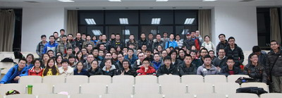
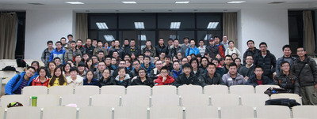
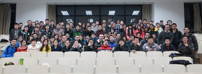

2013 Fall
课本Text
1. 吴望一，流体力学，北京大学出版社 1982
2. Batchelor, An introduction to fluid dynamics, Cambridge University Press,
考核：60%期末考试+40%作业
参考资料
1. 流体力学，第二版，周光炯等，高等教育出版社
2. Viscous fluid flow, F. White
| Lecture | Date | Assignment | |
| 1 | Sep 16 | Course overview PPT | |
| Sep 19 | 中秋 | ||
| 2 | Sep 23 | Tensor notations 张量介绍 | 作业1assignment1 |
| 3 | Sep 26 | Stress in fluids 应力 | 证明一个对称张量在坐标系旋转后依然是对称张量 |
| 4 | Sep 30 | Kinematics 1 , 运动1：平动、质点导数 | |
| Oct 3 | 国庆 | ||
| Oct 7 | 国庆 | ||
| Oct 10 | 国庆 | ||
| 5 | Oct 14 | Kinematics 2, relative motion near a point 转动、形变 | |
| 6 | Oct 17 | Kinematics 3, velocity decomosition | |
| 7 | Oct 21 | Stokes 假设 | |
| Oct 24 | 休课 | ||
| 8 | Oct 28 | CFD package FLUENT, slides | |
| 9 | Oct 31 | Equation of motion 3, energy | |
| 10 | Nov 4 | Bernoulli equation | |
| 11 | Nov 7 | Integral momentum equation | |
| 12 | Nov 11 | Prof. Wu's seminar on CFD | |
| 13 | Nov 14 | Statics | |
| 14 | Nov 18 | Vortex dynamics , 推荐观看录像 | |
| 15 | Nov 21 | Vortex dynamics | |
| 16 | Nov 25 | Helmholtz decoposition | |
| 17 | Nov 28 | Potential flow | |
| 18 | Dec 2 | Kutta-Jukowski equation , slides1, slides2 | |
| 19 | Dec 5 | Viscous flow | |
| 20 | Dec 9 | Similarity ,slides, Boundary layer | |
| 21 | Dec 12 | ||
| 22 | Dec 16 | Turbulence,slides, 周一下午3:35 研教楼102 | |
| 23 | Dec 19 | Compressible flow, slides, 周四下午3:35 研教楼102 | |
| 24 | Dec 23 | Review slides 周一下午3:35 研教楼102 | |
| 以往试题，答案， 大作业要求 | |||
答疑时间2014.1.2日3日 上午9:30-12点 考试时间 2014.1.5日 下午3:35开始， 100分钟，地点：研教楼204 |
以下照片点击可放大
|  | ||
|  | ||
|  |
{kind=link}
{kind=link}
{kind=link}